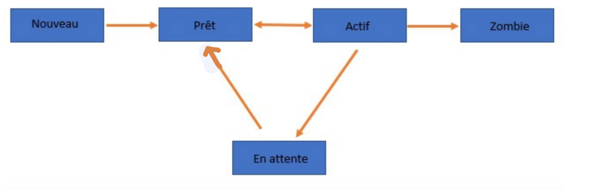

Processus#
Les systèmes d’exploitation (ou O.S. pour Operating System)#
Le système d’exploitation est un ensemble de programmes qui va permettre d’utiliser les éléments physiques d’un ordinateur pour exécuter les applications nécessaires à l’utilisateur.
L’élément fondamental d’un système d’exploitation est le noyau (ou kernel en anglais). C’est lui qui gère l’accès aux ressources matérielles.
Ces principales fonctions sont :
- le dialogue avec les périphériques (microprocesseur, mémoire, disques, carte graphiques,carte réseau, clavier, souris....) ;
- l’exécution par le microprocesseur des programmes souhaités par les utilisateurs et l’ordonnancement de ces tâches ;
- la gestion de l’accès aux ressources, pour permettre d’une part à tous les utilisateurs de travailler simultanément, et d’autre part de ne permettre l’utilisation d’une ressource qu’aux utilisateurs autorisés.
Au dessus du noyau, de très nombreux programmes sont en charge de toutes les fonctions qui sont offertes aux programmes utilisateurs pour permettre une utilisation complète et optimale de la machine physique (gestionnaire de fichiers, lecture de sons, gestion de l’énergie, gestion des communications réseau, gestion des performance,...)
Les systèmes d’exploitation actuels proposent aussi de nombreux outils de niveau supérieur qui apportent du confort de travail à l’utilisateur, jusqu’à lui éviter l’installation de programmes (navigateur internet, outil de traitement d’image, logiciel de messagerie, traitement de texte, etc...) Voici quelques exemples de système d’exploitation :
- MS-DOS, Windows ;
- OS/2, Mac-OS
- Unix (AIX, Xenix, Ultrix, Solaris, etc.) ;
- Linux ;
- Android.
Mais il en existe d’autres comme Symbian développé par Nokia, Tizen par Samsung, ...
Les systèmes d'exploitation ont en charge la gestion des différents processus.
Processus#
Introduction#
Pour permettre le fonctionnement d’un ordinateur, de nombreuses tâches ou applications doivent être exécutées simultanément par le système d’exploitation.
Notion de processus#
Lorsqu'un programme est exécuté sur un ordinateur, celui-ci va créer un (ou plusieurs) processus.
On dit que ce processus est une instance d'exécution de ce programme.
Un processus est caractérisé par :
- l'ensemble des instructions qu'il va devoir accomplir (écrites dans le fichier exécutable obtenu par la compilation du code-source du programme)
- les ressources que le programme va mobiliser (fichier en ouverture, carte son...)
- l'état des registres du processeur.
Observation des processus sous un système UNIX (Linux, MacOs, )#
La commande ps#
Dans un terminal, la commande ps va permettre d'afficher la liste des processus actifs.
Plus précisément, nous allons utiliser la commande ps -lu nom_user. L'option l permet d'afficher un grand nombre de renseignements et l'option u permet de spécifier l'utilisateur propriétaire des processus.
On retrouve notamment dans ce tableau les colonnes :
-
CMD (Command): le nom de la commande qui a créé le processus. Vous pouvez y retrouver par ordre chronologique le nom de tous les programmes actifs. Certains sont ceux que vous avez ouverts volontairement (navigateur...) mais on y trouve surtout tous les programmes nécessaires au bon fonctionnement du système d'exploitation. Le dernier processus en bas de la liste est forcément ps, puisque vous venez de l'appeler. -
PID (Process Identifier): le numéro unique d'identification, affecté chronologiquement par le système d'exploitation. Le processus de PID égal à 1 est systemd, qui est le tout premier programme lancé par le noyau Linux au démarrage. -
PPID (Parent PID): certains processus vont eux-mêmes lancer plusieurs processus-fils, qui porteront le même nom.
La commande top#
La commande top permet de connaître en temps réel la liste des processus, classés par ordre décroissant de consommation de CPU. Elle résume l’utilisation des ressources, de l’unité centrale à l’utilisation de la mémoire.
On ferme top par la combinaison de touches Ctrl-C.

En face de chaque processus est affichée sa consommation de CPU. Elle est calculée en prenant, sur un intervalle de temps donné, le temps qu'a passé le CPU à traiter le processus en question, et en divisant ce temps par le temps total de la mesure.
La commande kill#
La commande kill permet de fermer un processus, en donnant son PID en argument.
Exemple : kill 1453 tuera Chrome
Observation des processus sous Windows#
Microsoft Windows est architecturé en services (processus) fonctionnant en arrière-plan. Il est possible d’afficher facilement la liste des processus en cours dans le gestionnaire des tâches en appuyant simultanément sur CTRL+SCHIFT+ESC, ou en exécutant directement taskmgr.exe dans la barre de recherche.
Si vous lancez le gestionnaire de tache pour la première fois, vous serez peut-être amené à cliquer sur "Plus de détails " en bas à Gauche de la fenêtre.
Vous verrez alors une fenêtre avec six onglets. Dans l’onglet Processus, vous verrez tous ceux s’exécutant sur votre machine, ainsi que les ressources qu’ils consomment. On distingue trois catégories :
- Applications ;
- Processus en arrière-plan ;
- Processus Windows.

Par un simple clic droit sur son nom, suivi de fin de tâche on peut facilement tuer un processus, c’est très pratique lorsqu’un programme ne répond plus. Dans l’onglet Performance, nous pouvons voir graphiquement les ressources utilisé

Dans l’onglet Historique des applications, nous pouvons voir les ressources utilisées par application.
Dans l’onglet Démarrage, nous pouvons voir toutes les applications qui se lancent au démarrage de Windows.
Dans l’onglet Utilisateur, nous pouvons voir tous les utilisateurs connectés sur la machine, par un simple clic droit sur son nom on peut le déconnecter.
Les différents états d'un processus#
Un processus peut-être dans les états suivants :

L’état nouveau#
L’état nouveau (ou création) : chargement des instructions, allocation de mémoires et des ressources (statiquement), il passe directement à l’état prêt. Il existe 4 événements pour créer un processus :
- L’initialisation du système : au chargement du système il y’a création automatique du processus racine père de tous les processus utilisateurs (id=0)
- Un processus peut lancer un autre processus, il en devient le parent, l’autre dernier sera désigné comme processus fils. (Un processus père ne se termine que lorsque tous ses fils sont terminés. On a donc une structure arborescente de processus).
- Une requête de l’utilisateur
- Initiation d’un travail en traitement par lot ( on exécute le même travail sur plusieurs entités à la fois, c’est par exemple très utilisé en photographie où on applique la même action sur plusieurs clichés).
Lors de sa création, un numéro unique d’identification est attribué à chaque processus, c’est l’identifiant de processus ou PID (Process IDentifier). Grâce à cet identifiant, nous pourrons appliquer différentes commandes sur le processus.
L’état prêt#
Le processus est prêt à être exécuté. Il est mis en attente jusqu’à ce qu’on lui libère le processeur, il passera alors à l’état Actif ou élu.
L’état actif ou élu#
Le processus est en cours d’exécution par le processeur. Si le processus épuise le temps qui lui est alloué par le Système d’exploitation, il est remis en file d’attente des Prêts.
Si il a besoin d’une ressource non disponible (opérations sur les périphériques), il est mis en attente prolongée (Interruption : état bloqué) jusqu’à la libération de la ressource nécessaire Si le processus atteint son terme (se termine) il passe à l’état Zombie.
L’état attente ou bloqué#
Pendant son exécution (état Élu), le processus réclame une ressource qui n'est pas immédiatement disponible. Son exécution s'interrompt. Lorsque la ressource sera disponible, le processus repassera par l'état Prêt et attendra à nouveau son tour.
L’état zombie#
Le processus a terminé son exécution et il ne peut plus évoluer mais les ressources qu’il a allouées ne sont pas encore libérées
L’état destruction#
Lors de la destruction le processus libère les ressources allouées. Il y a quatre causes possibles de la destruction d’un processus :
- Arrêt normal : volontaire, lorsque le processus termine sa tâche.
- Arrêt pour erreur : volontaire suite à une erreur pour une instruction illégale
- Arrêt pour erreur fatale : involontaire tel que les mauvais paramètres de l’exécution du processus Arrêt volontaire par un autre processus
L’ordonnancement#
L’ordonnanceur#
Un ordinateur possède un ou plusieurs processeurs, qui sont eux-même constitués de plusieurs unités de calcul, les coeurs. C’est le système d’exploitation qui va donner à un processus l’accès à une unité de calcul, cela s’appelle l’ordonnancement. Les processus ne quitteront cette dernière que si :
- Le processus s’arrête, lorsqu’il est terminé.
- Le processus demande à partir, il n’est pas terminé et demandera à revenir plus tard pour poursuivre son exécution. C’est par exemple le cas d’une tâche cyclique.
- Le processus est en attente. C’est par exemple le cas si la ressource demandée par le processus n'est pas disponible. Le processus est mis en attente pour libérer la place sur l’unité de calcul.
- Le système choisit d’arrêter le processus. C’est par exemple le cas lors de l’interblocage que nous verrons plus loin.
Lorsqu’une unité de calcul est libre, c’est le système d’exploitation qui va déterminer un nouveau processus à affecter à l’unité de calcul. Pour cela il existe plusieurs algorithmes d’ordonnancement :
- Le modèle FIFO : on affecte dans l’ordre d’apparition ;
- Le modèle SJF : Shortest Job First, on affecte le « plus court processus en premier » ;
- Le modèle Round Robin : (ou méthode du tourniquet) on effectue un bloc de chaque processus à tour de rôle
- Le modèle Priorité : chaque processus dispose d’une valeur de priorité et on choisit le processus de plus forte priorité à chaque fois.
Actuellement, la plupart des systèmes d’exploitation utilise une évolution du modèle priorité,reposant sur les principes suivants :
- chaque processus possède une priorité de base.
- cette priorité augmente quand le processus est inactif et diminue quand il est actif (le taux de changement dépend de la priorité de base).
- le système choisit parmi les processus de plus forte priorité.
Notion d’interblocage#
Définition et exemple#
Comme nous venons de le voir, un processus peut être dans l'état bloqué dans l'attente de la libération d'une ressource.
Ces ressources (l'accès en écriture à un fichier, à un registre de la mémoire...) ne peuvent être données à deux processus à la fois. Des processus souhaitant accéder à cette ressource sont donc en concurrence sur cette ressource. Un processus peut donc devoir attendre qu'une ressource se libère avant de pouvoir y accéder (et ainsi passer de l'état Bloqué à l'état Prêt).
Problème : Et si deux processus se bloquent mutuellement la ressource dont ils ont besoin ?
Exemple : Considérons 2 processus A et B, et deux ressources R et S. L'action des processus A et B est décrite ci-dessous :

Déroulement des processus A et B :
- A et B sont créés et passent à l'état Prêt.
- L'ordonnanceur déclare Élu le processus A (ou bien B, cela ne change rien).
- L'étape A1 de A est réalisée : la ressource R est donc affectée à A.
- L'ordonnanceur déclare maintenant Élu le processus B. A est donc passé à Prêt en attendant que son tour revienne.
- L'étape B1 de B est réalisée : la ressource S est donc affectée à B.
- L'ordonnanceur déclare à nouveau Élu le processus A. B est donc passé à Prêt en attendant que son tour revienne.
- L'étape A2 de A est donc enclenchée : problème, il faut pour cela pouvoir accèder à la ressource S, qui n'est pas disponible. L'ordonnanceur va donc passer A à Bloqué et va revenir au processus B qui redevient Élu.
- L'étape B2 de B est donc enclenchée : problème, il faut pour cela pouvoir accèder à la ressource R, qui n'est pas disponible. L'ordonnanceur va donc passer B à Bloqué.
- Les deux processus A et B sont donc dans l'état Bloqué, chacun en attente de la libération d'une ressource bloquée par l'autre : ils se bloquent mutuellement.
Cette situation (critique) est appelée interblocage ou deadlock
Il est assez facile d’illustrer le phénomène d’interblocage en classe. Nous allons demander à deux élèves de tracer un cercle au tableau. On donne le compas au premier et le feutre au second. Les deux élèves vont se trouver dans une situation d’attente interminable puisque le premier élève attend que la ressource feutre soit libre, et le second attend que la ressource tableau soit libre.
Représentation schématique#
- les processus seront représentés par des cercles, les ressources par des carrés.
- Si à l'étape A1 le processus A a demandé et reçu la ressource R, la représentation sera :

- Si à l'étape A2 le processus A est en attente de la ressource S, la représentation sera :

Avec ces conventions, la situation précédente peut donc se schématiser par :

Ce type de schéma fait apparaître un cycle d'interdépendance, qui caractérise ici la situation de deadlock.